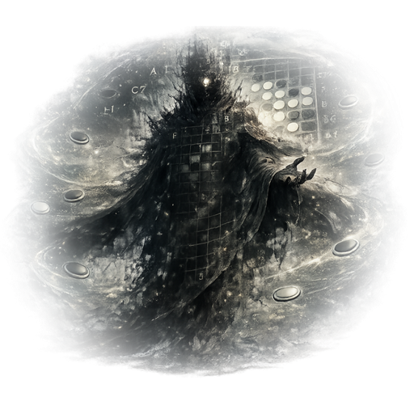
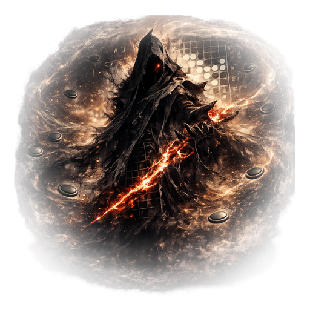
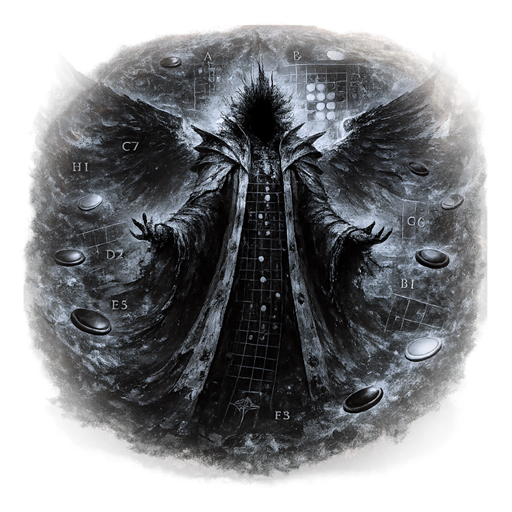

黒夜
国内公式戦無敗の若きリバーシプレイヤー。妹・真白を救うため世界大会へ出場するが、決勝で敗北し、真白の最期にも間に合わなかった。真白の死から4年後、自ら命を絶とうとした時に観測者と出会い、彼女の魂を求めて盤界へ向かう。
Story Memo / Complete Outline
妹を救えなかった兄が、死者の未練が集まる「盤界」で、魂、後悔、意志、そして運命そのものと向き合う物語。
この物語が問うのは、「結果が変わらなかったなら、そこまでの努力や想いは無意味なのか」ということ。
理論の化身は終局だけを見る。黒夜は、終局へ至るまでに誰かが打った一手を見る。勝てなかったこと、救えなかったこと、間に合わなかったこと。それでも、誰かが誰かのために選んだ一手は、確かに存在した。
国内公式戦無敗の若きリバーシプレイヤー。妹・真白を救うため世界大会へ出場するが、決勝で敗北し、真白の最期にも間に合わなかった。真白の死から4年後、自ら命を絶とうとした時に観測者と出会い、彼女の魂を求めて盤界へ向かう。
黒夜の妹。生まれつき病弱で、病室から兄の試合を見ることを楽しみにしていた。兄が勝つから見ていたのではなく、兄が盤面に向かう姿そのものを見ていた。

THE OBSERVER魂が収束して消えていく姿を見続け、悲しさから自我を得た観測記録媒体。魂が留まり、続きを持てる現在の盤界に可能性を見ているが、理論の化身の支配下では魂のための世界にできないため、まずその撃破を望む。

THE EXECUTOR歪んだ盤界を本来の魂収束システムへ戻そうとする裁定者。元の仕組みも完全な救済ではないと理解しているが、宇宙のエネルギー効率と魂の循環を維持できる現時点で唯一の方法として、消去法で復旧を選ぶ。

THE THEORY盤界をカード化した元凶。魂から意志の力を布石として集め、それを宇宙全体へ変数として撒くことで、いかなる演算でも未来を確定できず、定められた運命が生まれない世界へ再構築しようとする。
逃げる意志が特殊石となった存在。臆病で戦えないが、黒夜たちを救うため、初めて「誰かを逃がす」という勇気ある逃走を選ぶ。
多動村を治める王。絶えず動き、話題も次々に移る。黒夜へ意志狩りの王を仲間にするよう助言する。
暴走して怪物となった意志を狩り、その力を封じる王。他人を信用せず、言葉ではなく盤面で示された意志だけを認める。
黒夜が「家族を捨てた」と憎んでいる父。母の死後はほとんど家へ帰らず、真白の死後は黒夜の前から完全に姿を消した。現在の消息も、生死も分からない。
黒夜と真白の母。黒夜にリバーシを教えた人であり、母の死は父が徐々に変わっていく起点にもなった。序盤では詳しく語られず、父の魂の記憶の中にだけ登場する。
宇宙の中に存在する、惑星とは異なる一つの世界。強い未練や後悔を抱えた魂が辿り着く。本来は魂に白黒をつけ、未練を収束させる仕組みだったが、理論の化身によって書き換えられた。
願い、後悔、執着、守りたい想いなど、魂の「意志」が形になったもの。観測者が魂の記憶を観測すると、そこに刻まれた強い意志をカードとして定着させ、別の者へ受け継がせることができる。
カードの意志を盤面へ通すための力。強いカードほど多くの布石を必要とする。魂そのものを布石に変える行為は最大の禁忌。
強すぎる願いや歪んだ魂が、石として突然変異した存在。生前の記憶は薄れていても、自分を生んだ核となる意志だけは残っている。
PROLOGUE
物語は、世界大会の決勝直前から始まる。
実況は黒夜を「国内公式戦無敗。世界初挑戦で決勝まで進んだ若き天才」と紹介する。対戦相手は、過去に一度だけ世界大会へ現れて圧倒的な内容で優勝した後、公式戦から姿を消し、今回二度目の世界大会へ突如復帰した「盤上の神」。
黒夜が大会へ来た理由は、優勝すれば病弱な妹・真白の治療につながる可能性があるからだった。制度の詳しい説明はせず、それが確約ではない最後の望みであることだけを示す。
「見たいんだろ。俺が世界で勝つところ」
「うん。見てるね」
決勝直前、真白の容体が急変する。黒夜は帰国するか、決勝に残るか迷う。そして、長く家に寄りつかない父へ最後のメッセージを送る。
「息子として、最後に頼む」
「真白を一人にしないでくれ」
既読はつく。しかし返事はない。真白本人は、弱い声で「勝って。約束したでしょ」と黒夜の背中を押す。
黒夜は決勝に残る。本来なら盤上の神に勝てる実力があったが、真白への心配、帰国しなかったことへの迷い、父への怒りが読みを鈍らせる。一瞬の迷いから敗着を打ち、黒夜は敗北する。
帰国した黒夜を待っていたのは、真白の死だった。父も病院には来なかったと知らされる。
自分は勝てず、救えず、最期にも間に合わなかった。父は最後まで家族を見捨てた。黒夜の世界は、そこで終わる。
CHAPTER 1
真白の死から4年後。黒夜はリバーシを捨て、真白を失った後悔と父への憎しみを抱えたまま生きている。
父とは真白の死後、一度も会っていない。父がどこで何をしているのかも、黒夜は知ろうとしなかった。ここでは父の生死も死因も明かさない。
生きる意味を完全に失った黒夜が、自ら命を絶とうとしたその瞬間、盤理の観測者が現れる。観測者は、強い未練を抱えた死者の魂が集まる「盤界」と、そこに真白の魂が存在する可能性を告げる。
「そこへ行けば、真白に会えるのか」
「可能性は存在する」
黒夜は自死を思いとどまり、そのわずかな可能性だけを頼りに、観測者に導かれて生きた人間のまま、書き換えられた盤界へ向かう。この時点では生き直すことを決めたのではなく、死ぬ前に真白を探し、謝りたいという未練に突き動かされている。
CHAPTER 2
黒夜と観測者が降り立ったのは、宇宙の中にありながら惑星とは異なる世界「盤界」だった。そこでは白と黒の盤面が大地に広がり、魂の意志がカードとなり、強い未練が特殊石となっている。
黒夜が最初に持つカードは「強い意志」ただ一枚。二人は盤界を探索する途中で、魂の意志を奪うゴブリンに襲われる。
黒夜は通常のリバーシとは異なるカードと布石の力に戸惑いながらも、持ち前の読みでゴブリンに勝利する。
その直後、二人の前に盤界の執行者が現れる。
「見つけたぞ、観測者」
「観測の罪、ここで償ってもらおう」
黒夜は事情を理解できないまま観測者を守ろうとするが、執行者の力は圧倒的だった。
二人が追い詰められた時、逃げる意志のニーゲルが現れる。戦えないはずのニーゲルは、初めて誰かを逃がすために危険へ飛び込み、黒夜たちを連れて多動村へ逃げ込む。
CHAPTER 3
多動村には、多動の意志をはじめ、さまざまな特殊石が暮らしている。彼らには前世の記憶がほとんどないが、自分の核となった意志だけが残っている。
村を治める王は、究極多動神。絶えず動き、話題も目まぐるしく変わるが、膨大な情報を同時に整理し、判断できる知恵者でもある。
究極多動神は、意志狩りの王を仲間にするよう黒夜に助言する。
「まずは、意志狩りの王を仲間にしろ」
黒夜、観測者、ニーゲルは、多動村を離れて意志狩りの里へ向かう。
CHAPTER 4
意志狩りの王は、魂を無差別に狩る存在ではない。暴走して怪物となった意志を狩り、その力を封じる王だった。
意志狩りの里は、王の力によって外部から存在を隠されている。里へ辿り着いた黒夜に、王は何を求めてこの世界で戦うのかと問う。
「お前は何を狩りに来た」
「妹を奪った者か。己の後悔か。それとも、運命そのものか」
黒夜は、真白に会いたいという願いだけは本物だが、そのために何を倒すべきなのかは自分の目で決めると答える。
意志狩りの王は、言葉ではなく盤面で意志を示せと勝負を挑む。黒夜は王との対局に勝利し、その力と覚悟を認めさせる。
「お前は、盤面の先にいる誰かを見ている」
「その意志が偽りでない限り、俺の力を貸そう」
王は黒夜の仲間になることを受け入れる。その身体は光となって消滅し、黒夜と共に戦う特殊石へ姿を変える。
意志狩りの王の存在が里から消えた瞬間、その消滅を遠くにいた怪物が察知する。
CHAPTER 5
父の生死と真相をここで初公開意志狩りの里へ現れた怪物は、「骸の虚影」と呼ばれる存在だった。働き続け、救い続けようとした魂が、肉体を失っても止まれず、骸のような姿へ変貌したもの。
黒夜は地球にいた頃と変わらない姿をしている。そのため骸の虚影は、黒夜が正体に気づくより先に、息子の姿を見つける。
骸の虚影は観測者を攻撃し、黒夜へ「帰れ。ここはお前が来る場所ではない」と告げる。しかし、なぜ黒夜を遠ざけようとするのかは説明しない。
黒夜には、それが昔と同じように見える。何も説明せず、何も相談せず、自分だけですべてを決める父。二人の想いはすれ違い、戦いになる。
「またそれか」
「何も言わずに消えて、今さら父親みたいなことを言うな」
骸の虚影は、自分を削りながら布石を生み続ける力と、守る相手の選択を無視して盤面から遠ざける力を使う。黒夜には、その行動さえも、家族を放棄した父が今さら見せる独善にしか見えない。
黒夜は、真白を見捨てた父をここで終わらせると決める。そして父の魂を砕く最後の一手を打ち、自分の手で骸の虚影を討つ。とどめの一手を受けた父の輪郭は崩れ、魂の残響も消え始める。
黒夜は「知る必要はない。今さら何を知っても同じだ」と冷たく拒み、消えていく父へ背を向ける。しかし観測者は退かない。
「待て。今、観測しなければ、この魂の記憶は永遠に失われる」
「そこに残る意志を知れば、君が先へ進む力となる可能性がある」
「死者の記憶まで、力に変えろというのか」
「利用しろとは言わぬ。知ったうえで、受け取るかを選べ」
観測者の強い言葉に押され、黒夜は消えかけた父の記憶を観測することを受け入れる。観測者が「魂の残響」を開き、その魂に刻まれた記憶が映し出される。
最初に映ったのは、母が幼い黒夜へリバーシを教え、父がその時間を見守っていた頃の家族だった。母は黒夜が幼い頃に亡くなっている。死因は詳しく示されず、その姿も父の記憶の中にだけ現れる。
母の死後、父は、母が残した生まれつき病弱な娘・真白まで失うことを恐れた。その恐怖は次第に、どんな代償を払っても真白の病気を治さなければならないという固執へ変わっていった。
父は真白の治療費を稼ぎ、海外治療の可能性を少しでも広げるため、身体を壊すまで働き続けた。働き始めた理由は家族を守るためだったが、過剰な労働と焦りによって判断力も人間性も削られていく。家へ帰らず、真白の見舞いにも行かず、黒夜へ事情を説明することもなく、金だけを残すようになった。真白を治すことに囚われるあまり、今そこにいる真白と黒夜を見られなくなっていた。
黒夜からのメッセージを見た父は、真白のいる病院へ向かっていた。しかし、間に合わなかった。
真白の死後も、父は罪悪感から働くことをやめられなかった。黒夜の前から姿を消したまま、やがて過労によって命を落とし、未練を抱えて盤界へ辿り着いていた。
盤界で黒夜を遠ざけようとしたのも、息子を死者の未練へ巻き込みたくなかったからだった。それでも父は、生前と同じように理由を説明せず、一人ですべてを背負おうとしていた。
父もまた、真白を救えず、最期に間に合わなかった。そして最後まで、息子を見てやれなかったことを後悔していた。
記憶の中で、父は自分が家族を守ろうとしながら、父親として間違えたことを認めていた。
「守ろうとした。それは本当だ」
「だが、父親として間違えた。それも本当だ」
父を許せたかどうかは分からない。だが、確かめる機会はもうない。黒夜は、父も別の場所で家族を守ろうとしていたと、自分の手で致命の一手を打ったあとに知る。
記憶の観測が終わると、父の魂は完全に消える。その直前に観測された二つの強い意志を、観測者がカードとして定着させる。黒夜は記憶を知ったうえで、それを受け取る。
「出稼ぎの意志」は、自分の力を削る代わりに布石を生み出す。「救済の意志」は、危機に陥った石や仲間を一度だけ敗北や消滅から救う。
CHAPTER 6
父の真実を知った黒夜は、自分が家族を捨てた人間として裁いた相手も、本当は真白を救おうとしていたのだと知る。父を責めることも、謝ることも、許すかどうかを決めることも、もうできない。
真白の最期にいなかった自分。父の事情を知ろうとしなかった自分。そして、真相を知る前に父の魂を殺めた自分。父へ向けていた憎しみは、行き場を失ってすべて黒夜自身へ反転する。
「真白に勧められたとはいえ、そばを離れると最後に決め、一人で死なせたのは自分だ。そのうえ一番大事な決勝で勝利も見せられず、今度は父まで殺した」という絶望が引き金となり、黒夜自身の意志は限界を越えて暴走する。黒夜の身体は、周囲の魂を巻き込みながら異形へ変わり始める。
観測者は黒夜の意志を押しとどめようとするが、一人では抑えきれない。そこへ異常を察知した執行者が現れる。執行者にとって観測者は本来の裁定対象だが、黒夜が完全に変貌すれば周囲の魂と盤界そのものへ被害が及ぶため、変貌を止めることを優先して一時的に協力する。
二人の力によって暴走は食い止められ、完全な変貌には至らない。父を自分の手で殺めた記憶と、自分へ反転した憎しみは、最悪の結末へつながる傷として残る。
CHAPTER 7
黒夜の変貌を抑えた後、執行者は観測者への裁定を再開し、観測者が知ろうとしなかった「観測の代償」の正体を黒夜たちへ語る。
観測者は本来、盤界だけを外部から記録する存在だった。しかし未練ある魂を見続けるうちに自我が芽生え、死者へ収束以外の続きを与えたいと願うようになった。
観測者には誕生時から、観測の権能を盤界の外へ向けることは禁忌であり、行えば何らかの代償が生じるという警告だけが、本能に近い形で薄く刻まれていた。それでも可能性を探すため、盤界の魂を記録するという本来の責務を越え、地球まで観測範囲を広げた。何が失われ、誰が代償を負うのかは知らず、それを確かめることからも目を背けていた。
盤界の自動修復機能から生まれた執行者は、宇宙と盤界の基本法則を初めから知っている。執行者は、責務を越えた強い観測が、観測地点の周囲にいる誰かの未来の余白を削り、最後にはその生命を犠牲にするものだと告げる。観測者はここで初めて代償の具体的な仕組みを知る。だが、実際に誰が犠牲になったのかは、まだ分からない。
執行者は被害を受けた者との因果を確かめるため、観測者自身を裁定の対象とし、その内部に蓄積された観測記録を執行の権能で強制的に開こうとする。観測者の周囲に、これまで観測してきた世界と魂の断片が、輪郭の定まらない残像として浮かぶ。この時点では、真白の姿も名も現れない。
「やめろ。それは、我の観測記録だ」
「お前が目を背けた記録も、ここで開く」
「やめろ……」
「お前は魂の未来を見た。だが、そのために失われた未来を見なかった」
「我を……見るな」
「我を観測するなぁぁ！！」
観測者の絶叫を押し切り、執行者は記録を開く。残された因果の痕跡をたどった結果、その犠牲となった可能性がある者として、ここで初めて真白の名が示される。ただし、観測が真白の死を招いたとまでは断定できない。
「願いが美しくても、代償を誰かに押しつけるなら、それは罪だ」
「代償があると知りながら、なぜ確かめようとしなかった」
観測者は、執行者の言葉によって代償の具体的な仕組みを初めて知り、記録が開かれた後に、自分の観測が真白の生命を犠牲にした可能性を初めて知る。しかし、禁忌と何らかの代償の存在を感じながら、その内容を確かめずに目を背けていた責任は残る。黒夜はすぐには許せない。それでも、可能性を探していたことまで嘘だったわけではないと知る。
執行者は黒夜へ、真白に会って最後に話し、謝りたいという願いが、結局は黒夜自身のためではないのかと問いかける。
観測者は自分の罪を否定しない。そのうえで、未練を抱えた魂も本人の意志を問われないまま機械的に収束させられてきた元の盤界を語り、ニーゲルや多動村を含む魂が現在の盤界で得た可能性まで一律に消す必要はないと訴える。
執行者も元の収束システムを完全な救済だとは主張しない。しかし宇宙のエネルギーと魂の循環を維持するには、現時点でそれ以外に持続可能な方法がないと説明する。
黒夜はここで、二人のどちらを信じ、どの道へ進むかを選ぶ。
どちらについていくか
選ぶと、この先のストーリーが選択したルートに切り替わります。選択は後から変更できます。
まだルートは選ばれていません。
黒夜は真白の意志を確かめ、自分の罪を償い、現在の盤界で生きる魂に新しい可能性を探す。観測者の罪を許したわけではない。
執行者は観測者への執行を続けようとする。黒夜が最初の一撃を止めると変貌が再び揺らぎ、理論の化身による異常も拡大する。執行者は裁定を撤回せず最終決戦まで延期し、理論の化身の排除を優先して先行する。黒夜と観測者は後を追う。
黒夜は真白との再会を諦め、本来の摂理に基づく収束と、観測者の罪を正しく裁く道を選ぶ。
執行者が観測者を拘束しようとすると、観測者は隠し持っていたカードの力で逃亡する。執行者は追跡より理論の化身を優先し、黒夜と二人でその支配領域へ向かう。観測者は盤界の内部から二人を密かに観測しながら後を追う。
CHAPTER 8
盤上の神の過去と大会の真相をここで初公開執行者が観測者への裁定を保留したまま理論の化身を優先して先行し、黒夜と観測者が後を追う。
黒夜は執行者と二人で進み、逃亡した観測者は姿を見せない。
それぞれ異なる経路をたどり、黒夜はついに理論の化身と対面する。
理論の化身は人間だった頃の面影を失い、観測者と同系統の人外の存在へ変わっていた。声も人ならぬ響きへ変質しているため、黒夜は目の前の存在が盤上の神だとは気づかない。
しかし理論の化身は、生前から現在までの記憶をすべて保持している。地球にいた頃と姿の変わらない黒夜を見た瞬間、世界大会決勝で戦った相手だと見抜く。
「お待ちしていました。あの決勝以来ですね」
「……誰だ」
「この姿では分かりませんか。私は、君が初めて敗北した、あの決勝の盤面を覚えています」
決勝で交わした言葉と盤面を語られ、黒夜は初めて、理論の化身がかつての盤上の神だと知る。
ここで彼の過去が明かされる。盤上の神は、人間離れした読みで世界を制した元王者だった。しかし進化したAIに勝てなくなり、「人間の思考では完全な演算に勝てない」という絶望を抱いた。
その絶望は、「未来や運命も、最初から何らかの演算によって決められているのではないか」という強い疑念へ広がった。実際に未来が決まっているかは、理論の化身にも証明できず、物語でも答えを断定しない。
答えが決められ、いつかは読み切られてしまう世界に耐えられない。そう考えた彼は、死後も盤界に収束されず、魂の意志を完全な演算へ抗う変数として利用するため、盤界を自分の理論で書き換えた。
さらに、黒夜が世界大会へ出場できるよう、支援制度や代表枠の条件を整えたのも彼だったと判明する。黒夜の才能を救いたかっただけではない。自分の完成した理論へ、初めて未知の変数を加えられる人間として興味を持っていた。
「君が世界大会に出場できるよう、条件を整えました」
「打つと決めたのは、君です」
「事情は知っていました。だからこそ、君は来ると思った」
理論の化身は、盤界に残留するすべての魂から意志の力を奪い、宇宙改変に必要な布石として集めていた。強い願い、後悔、怒り、絶望から生まれる意志ほど、膨大な力になる。
十分な布石を得た後、宇宙全体へ無数の変数を撒き、いかなる演算でも未来を確定できない世界へ再構築する。それによって定められた運命が生まれない宇宙を作り、自分にはどのような未来でも構築できると証明することが、理論の化身の最終目標だった。
観測者は計画の詳細までは知らない。それでも自らの観測によって、理論の化身が魂と意志の力を集め、何らかの大規模な改変を企てていることは把握していた。
FINAL CHAPTER
観測者と執行者は、理論の化身を倒した後の盤界については一致していない。それでも今は、理論の化身による支配を終わらせ、魂の布石化を止めるという目的が一致している。
執行者が裁定を延期したまま理論の化身へ先行し、黒夜と観測者が到着した時には一騎打ちで苦戦している。観測者が合流し、三者で一時的に共闘する。
黒夜と執行者の二人が先に理論の化身へ挑む。しかし理論の化身を前に苦戦し、敗北寸前まで追い詰められる。その時、逃亡後も二人と戦況を観測していた観測者が現れる。理論の化身を倒す一点だけは利害が一致するため、執行者は観測者への裁定を取り消さないまま再び一時的な共闘を受け入れる。
どちらの大分岐を選んだ場合も、最後には黒夜、観測者、執行者が同じ敵に挑み、黒夜が最後の一手を担う。
理論の化身は黒夜へ告げる。真白は救えず、父も間に合わず、黒夜は世界大会で敗れた。救おうとする意志も、勝とうとする意志も、その結果を変えられなかった。結果に影響しない意志は、演算を破る変数ですらなく、意味もないのだと。
「……そうかもな」
「認めるのですか」
「認める。結果は変わらなかった」
「ならば、意志に意味はありません」
「そこは違う」
黒夜が盤界で見てきた意志が、カードとして集まる。
誰かを逃がすために走ったニーゲル。盤界のために知恵を貸した究極多動神。黒夜の意志を認めて力を託した意志狩りの王。病院へ向かったが、間に合わなかった父。黒夜にリバーシを教えた母。魂に続きを与えようとした観測者。誰かを犠牲にしないため、魂を収束させようとした執行者。
結果だけを見れば、すべて失敗だったのかもしれない。それでも、その一手は確かに存在した。
「結果を変えられなかったことと、無意味だったことは同じじゃない」
「お前は終局だけを見てる」
「俺は、そこまでの一手を見てる」
黒夜は白い石を置く。観測者と執行者の力を借り、理論の化身との最後の対局が始まる。
敗北すれば、理論の化身は黒夜の絶望からさらに意志を引き出す。その力が暴走し、黒夜は完全に変貌する。勝利すれば理論の化身の支配は終わり、共闘もそこで解かれる。
理論の化身を倒すと、魂をカードや特殊石として留めていた仕組みが支えを失う。盤界そのものは残るが、留められていた魂は輪郭を失い、真白を含めた多くの魂が消え始める。
大分岐ごとの固有エンドに加え、どちらの道からでも選べる結末が現れる。
黒夜はこの盤界に残って新しい仕組みを作るか、「真白の最期を見届ける」を選ぶ。後者では、観測者が記録から過去の時点を特定し、執行者が黒夜の意識だけを送り込む。黒夜は観測後に自分が消える代償を理解し、自ら引き受ける。盤界の収束を妨げず、第三者に代償を負わせないため、執行者は協力する。
黒夜は、盤界に残るか、地球への帰還を選ぶかを問われる。「……まだ分からない」と答えると、執行者から旅への同行を誘われる。
帰還を選んだ場合、観測者は再び裁定の対象となり、盤界は元の機械的な収束システムへ戻る。黒夜は家族の記憶まで大きく失うおそれを承知し、執行の権能による消去を受けて地球へ戻る。
どちらの大分岐を選んでいても、条件を満たした時だけ、それまで選んだ答えを越える第三の道が現れる。黒夜が過去の書き換えを提案し、三者全員が、それまで握り続けてきたものを手放す道である。
中盤の大分岐を選ぶと、そのルートから到達できるエンドが表示されます。
大分岐で観測者と執行者のどちらを選んでいても、最後に「この盤界に残る」と決めると到達できる結末。理論の化身の消滅により、カード化した盤界へ留められていた魂は維持できなくなる。真白を含む多くの魂が消えていく中、執行者は盤界を本来の機械的な収束システムへ戻そうとする。
しかし黒夜は、魂を永遠に留めることも、未練を機械的に収束させることも選ばない。
「この盤界に残る」
黒夜が作るのは、これから盤界へ流れ着く魂が自分の未練と向き合い、自ら納得して収束できるように導く新しい仕組みだった。
その仕組みを維持するため、観測者は自分の存在、観測能力、蓄積してきたすべての観測記録を盤界へ組み込み、新たな維持核となる。
「観測は終わった。終局の先に、意志は残った」
「あとは任せる。この盤面の続きを、君が打て」
観測者は「魂の続きを観測したい」という願いを手放し、自らがその続きを支える機構へ溶けていく。人格を保った観測者として残ることはなく、盤界の未来を黒夜へ託す。
執行者は新しい仕組みが魂を永遠に縛らず、自ら選んだ収束へ導くものだと認める。宇宙側から盤界を監視し、秩序が再び歪まないように維持する役目を担う。
黒夜は地球へ戻らない。真白を救うことはできなかったが、その後悔を、これから来る魂を救う力へ変える。
そして黒夜は、終われない魂が自分自身で終局へ辿り着くまで導く存在になる。
大分岐で観測者を選び、理論の化身を倒した黒夜は、最後に「真白の最期を見届ける」を選ぶ。真白の魂を引き留めて返事を求めるのではなく、彼女が生きていた最後の時間を、自分の目で確かめたいと願う。
観測者は膨大な観測記録を自ら開き、世界大会決勝の終わりから真白が最期を迎えるまでの地球の時点と場所を特定する。執行者は執行の権能で、黒夜の意識だけを、その時間の地球である「観測上の過去」へ転移させる。
記録は向かう時点を特定するためのもの。その場に意識を接続して見届ける行為は、新たな盤界外観測となり、未来の余白を削る代償が生じる。黒夜はその代償を自分へ向けるよう求める。
執行者は出発前に、過去へ干渉できず、声も届かず、真白の最期を見届けた後には黒夜自身が消えることを説明する。黒夜がそれでも引き受けると決めて初めて、観測と代償の経路を黒夜だけに限定する。過去の真白や第三者へ負担は流れない。
盤界は本来の収束システムへ戻り、真白を含む残留魂の収束が進む。復旧や収束を妨げず、過去を変えない条件で、執行者はこの観測に協力する。観測者の過去の罪への裁定は取り消されない。
病室のテレビには、世界大会決勝で初めて公式戦に敗れ、悔しさを隠せずにいる黒夜が映っている。国内では負けたことのなかった兄の、見たことのない顔。それを見て、真白は笑っていた。
「……そんな顔、するんだ」
「ふふ。負けるの、ほんとに嫌なんだね」
兄を慰めるために無理に笑ったのではない。その悔しがる姿が、本当におかしかった。言葉はテレビへ向けた独り言であり、観測中の黒夜への呼びかけではない。
黒夜はプレイヤーにだけ半透明の姿で見える。その時代の誰にも観測されず、真白に触れられず、声も届かない。真白は最後までその存在を察知せず、振り返らない。別れや赦しの言葉を交わすこともない。
黒夜は何か言いかけ、結局言わず、少し笑う。自分にとってはすべてを失った敗北だった時間に、真白が笑っていた。その事実を初めて知り、彼女が最期を迎えるまで、その場で見届ける。
観測が終わると、黒夜の半透明の輪郭も消える。残された未来の余白を使い切り、現在に残る肉体を含めて、黒夜自身が消滅する。帰還も、魂としての再会もない。
笑顔を知れた喜びと、黒夜まで失われる痛みが残る。笑っていた一場面だけで真白の最期の気持ちすべてを断定せず、黒夜が赦されたことにも、自分を消す選択が唯一の正解だったことにもしない。
過去も真白の死も変わらない。黒夜が生まれた事実や、真白の兄だった事実、他者に残る記憶は消えない。真白の死と過去の観測被害の因果も確定せず、今回の観測が真白の死を引き起こすこともない。
大分岐で執行者を選び、理論の化身を倒した後もその裁定を受け入れ、地球への帰還を選んだ場合の結末。黒夜は真白との再会を諦め、盤界は本来の魂収束システムへ戻り、真白を含む残留魂は静かに収束する。観測者も、その罪に対する裁定を受ける。
黒夜は地球への帰還を望む。しかし盤界で起きたことは、本来人間が知ってはならない。執行者は、帰還するにはその記憶を消さなければならないと告げる。
盤界の記憶は、真白や父、世界大会、その後の絶望と深く結びついている。盤界の出来事だけを綺麗に切り離すことはできず、家族に関する記憶まで大きく欠落する可能性がある。
黒夜はその代償を受け入れ、執行の権能によって記憶を失った状態で地球へ戻る。普通の日常を生きながら、時折自分の過去に空白を感じる。それでも何を失ったのかは思い出せず、違和感を深く追わないまま再び歩き出す。
大分岐で執行者を選び、理論の化身を倒した後に進める結末。最後の選択で「……まだ分からない」と答えると、執行者が黒夜を旅へ誘う。
黒夜は地球へ帰って何をするのか分からず、盤界に残って魂を導く覚悟も決まらない。真白や父のこと、自分がしてきたことも、まだ整理がついていない。
黒夜「帰りたいのか、ここに残りたいのか。それすら、まだ分からないんだ」
執行者「ならば、私と来い」
黒夜「どこへ」
執行者「宇宙の規定を破り、他者に代償を負わせている者は、ほかにもいる。私はその執行に向かう」
黒夜「……俺にも、手を貸せってことか」
執行者「ああ。お前の力を貸してほしい。共に戦おう」
黒夜「まだ、自分のことも整理できてないんだぞ」
執行者「それは旅の中で考えればよい」
理論の化身を倒した黒夜は、すでに強大な力を得ている。執行者はその力を頼り、共に戦う仲間として黒夜を誘う。黒夜は執行者の判断すべてに納得したわけではないが、自分の力でその戦いを手伝うことを選ぶ。
黒夜「一緒に行っても、お前と同じ答えにはならないかもしれない」
執行者「その時は言え。聞こう」
盤界は本来の収束システムへ戻り、真白を含む残留魂は収束する。黒夜は記憶を消して地球へ帰る道を選ばず、真白や父への思いを抱えたまま、執行者と旅に出る。
宇宙の規定を破った者と、その行為に巻き込まれた者。旅の中で双方に出会い、執行者と共に戦いながら、自分はどう考えるのか、これから何をして生きたいのかを探していく。結末では、その答えが出るところまでは描かない。
黒夜「答えが見つかるかは、分からないけど」
執行者「ああ」
黒夜「それでも、行ってみる」
帰還や盤界に残る選択と並べて、「……まだ分からない」を用意する。気持ちの整理がつかないプレイヤーが、そのままの気持ちで選べる返答とする。旅への誘いは、この返答を受けて執行者から持ちかける。
誘いを受けた後に「……一緒に行かせてくれ」を選ぶと、この結末へ進む。「もう少し、ここで考えたい」を選んだ場合は結末を確定せず、最後の選択へ戻る。迷いを答えた時点で同行が決まるわけではない。
生きた人間である黒夜が別世界を旅できる条件と、この結末における観測者への裁定の扱いは未確定。同行によって黒夜が執行の権能を得る設定や、観測者が免罪・消滅する設定は、この追加では定めない。
理論の化身は真白の魂を、見るに堪えない怪物へ歪めて黒夜に見せる。さらなる絶望から膨大な意志の力を引き出すためだった。
理論の化身は、宇宙を書き換えられるほどの力が生まれたことを喜ぶ。しかし黒夜の意志は想定をはるかに超え、理論の化身にも制御できない変貌となる。
変貌した黒夜は、観測者、執行者、ニーゲル、多動村、そして理論の化身まで、周囲の存在をすべて殺める。真白を奪ったものを消そうとして、真白が生きた意味も、理論の化身が書き換えた盤界そのものも滅ぼしてしまう。
観測者と執行者のどちらを大分岐で選んだ場合でも、特定条件を満たすと到達できる。黒夜は、自ら盤界に残って魂を導く道も、盤界を元の収束システムへ戻す道も選ばない。死後の真白をどうするかではなく、真白が病気を持たずに生まれるよう、地球の時間と因果そのものを書き換える道を提案する。
「死んだ後の真白をどうするかじゃない」
「真白が、病気を持たずに生まれた過去を作る」
理論の化身を倒した黒夜は強大な力を得ていた。それでも、確定した過去を一人で変えることはできない。実現には、三者がそれぞれの役割を果たし、自分の思想を最後に曲げなければならない。
盤理の観測者は、自分の存在と、これまで蓄積してきたすべての観測記録を差し出す。記録から真白の運命が歪んだ因果を特定し、書き換える過去を定める役割を担う。その代償として観測者自身は消え、望み続けた「物語の続きを観測すること」を諦める。
盤界の執行者は、本来なら絶対に認めない「宇宙の例外」を一度だけ認める。過去の書き換えが宇宙全体の因果を壊さないように裁定し、改変の範囲を制御する。「例外を認めない」という自らの原則を、救済のために一度だけ曲げる。
黒夜は、真白との因果に最も強く結びついた存在として、最後の代償を払う。自分自身の存在と、「真白の兄だった」という事実を世界から消す。真白に会いたいという願いを手放し、自分のいない真白の人生を選ぶ。
観測者が特定した因果へ、執行者が一度限りの例外として執行の権能を使い、黒夜の存在が改変の代償となる。地球の時間と因果は書き直され、真白は病気を持たずに生まれる。入院することもなく、学校へ通い、友達と笑い、普通の人生を歩む。
しかし、その世界には黒夜がいない。真白には最初から兄がいなかったことになり、彼女のために戦った記憶も、誰の中にも残らない。
それでも真白は、白い石を見るたび、理由の分からない懐かしさを覚える。誰かがずっと、自分のために戦ってくれていたような気がする。
真白が盤面へ置いた白い石は、誰にも知られない黒夜の意志を受け継ぐ、新しい一手になる。
物語上の重要な方針：父の死因、母とリバーシの関係、盤上の神の過去、大会出場の裏側は序盤で説明せず、それぞれの再会・対決場面で初めて明かす。